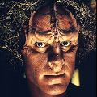
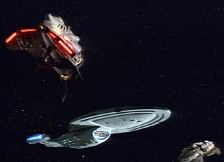
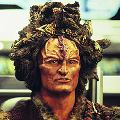
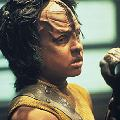

|


Referncias:
| Episdio | Ano |
| Caretaker,
Parts I & II (Voyager) |
2371 |
| State
of Flux (Voyager) |
2371 |
| Initiations (Voyager) |
2371 |
| Maneuvers (Voyager) |
2371 |
| Alliances (Voyager) |
2372 |
| Investigations (Voyager) |
2372 |
| Basics,
Part I (Voyager) |
2372 |
| Basics,
Part II (Voyager) |
2373 |
| Relativity (Voyager) |
*2372 |
| Shattered (Voyager) |
*2372 |
*
encontros causados por
anomalias temporais
Marcos histricos:
| 2371 Primeiro contato com seres humanos, quando a nave USS Voyager da Frota Estelar transportada cerca de 70.000 anos-luz ao quadrante Delta por uma fora aliengena |
|
 KazonsKazons
Histria Os Kazons so uma sociedade militarizada, dividida em faces que lutam entre si. A todo tempo, novos grupos so formados e outros desaparecem (por volta da data estelar 49005.3 havia 18 deles). Os mais conhecidos so os Kazons-Pomar, os Mostral, Hobai, Oglamar, Nistrim e Ogla. At o ano 2346, essa raa coexistiu com os Trabes em um mesmo mundo. Estes dominavam o comrcio e detinham o poder poltico e acesso informao, deixando os Kazons margem da sociedade. Cansadas de viverem em regime de escravido, as faces se uniram em luta sem precedentes para banir os Trabes, espalhando-os como nmades pelo quadrante e, apoderando-se da tecnologia dos antigos dominadores, tornaram-se uma grande fora no quadrante Delta. Nos anos que se seguiram, no entanto, eclodiu uma permanente guerra civil. Individualistas e intolerantes, os grupos tentam explorar ao mximo os recursos sob seu controle. Alguns negociam alimentos, outros equipamentos e outros, esplios de guerra. Os Kazons-Ogla, que atualmente ocupam o planeta natal dos Ocampas, comercializam cormalina, mineral abundante na superfcie. Para eles, a gua escassa, ento empreendem campanhas militares para obt-la. Aparentam ser a faco menos organizada da Ordem Kazon, o que se reflete no nmero de lderes (entitulados "Majes") disputando o poder; h pelo menos dois deles: Jabin e Razik, alm de seu sucessor, Haliz (data estelar 49005.3). O primeiro contato que os humanos tiveram com a raa no ocorreu nas melhores circunstncias. Na data estelar 48315.6, a nave USS Voyager, sob o comando da capit Kathryn Janeway, foi catapultada para essa longnqua regio da galxia por uma poderosa entidade conhecida como "O Guardio". A cerca de 70.000 anos-luz da Terra e procurando meios de voltar para casa, a tripulao da pequena nave envolveu-se em um srio conflito com espcie. Os Kazons se destinaram a atacar a Voyager no apenas por ser uma fonte inesgotvel de tecnologia, mas por ser tripulada por forasteiros, comandada por uma mulher e por pertencer a uma Federao comparada por muitos aos Trabes.  O ltimo encontro com
a raa ocorreu no incio do ano 2373, poca em que a nave
perdida da Federao finalmente atravessou o territrio hostil
em sua longa viagem para o quadrante Alfa. Fisiologia Sabe-se de casos em
que membros de faces extremistas injetaram produtos qumicos
no corpo que, em contato com substncias do sangue Kazon,
levaram a exploses causadas por reao em cadeia. Cultura Desde a infncia, so instrudos e treinados com rigor para se tornarem indivduos valentes, xenfobos e extremamente machistas. Virtualmente nada se sabe sobre as mulheres da espcie, seu tratamento ou posio dentro da sociedade, ou sobre a estrutura familiar. Os Kazons no
do valor algum ao capital acadmico ou intelectualidade.
Para os Majes, tudo o que importa o prestgio e superioridade
perante as faces rivais, o que vai desde harns a acmulo de
metais e riquezas materiais. Personalidades   |